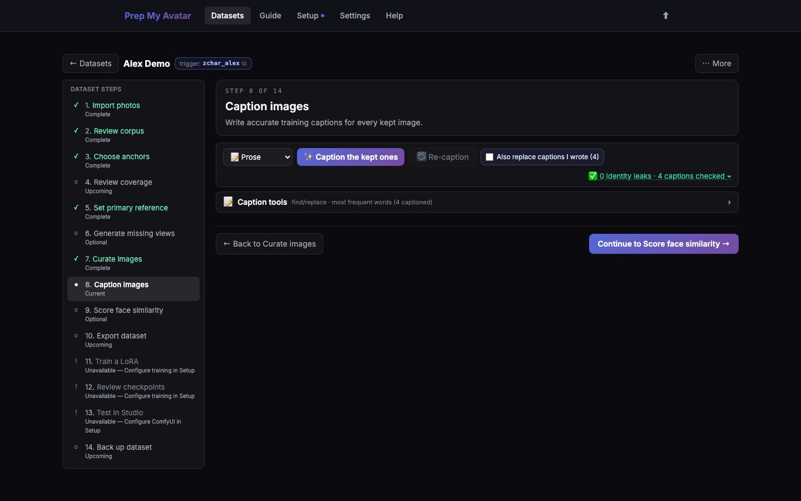

First run · 15 of 21
Step 15: Caption images
A caption tells the training model what is visible in each image. The thing you are teaching must be left out: Character captions omit identity traits, Concept captions omit the concept, and Style captions describe content rather than the visual style.

Before you begin
Keep and reject images before captioning. Automatic captioning needs a ready local-vision backend. Without one, you can type captions manually on each kept image.
Do this
- Open Caption images in the dataset step navigator. Its URL ends in
/captions. - Confirm the caption style. Use prose for the prose-based model families; use booru tags for an SDXL booru workflow.
- Select Caption the kept ones and wait for the count to finish.
- Read every caption. Correct factual mistakes and remove descriptions of the training target.
- For a Character or Concept dataset, open the identity- or concept-leak badge and fix every highlighted caption. Style datasets have no automatic style-term scanner: review them manually and remove aesthetic, medium, artist, or other style names so each caption describes content only.
- Use Caption tools for a repeated find-and-replace across the set.
- If another trainer needs sidecar files, use Write .txt files after the captions are final.
- Select Continue. Character datasets open Score face similarity; Concept and Style datasets open Export dataset.
You are finished when
The kept and captioned counts match, every caption is accurate, target-leak review is clear where applicable, and the navigator marks Caption images — Complete.